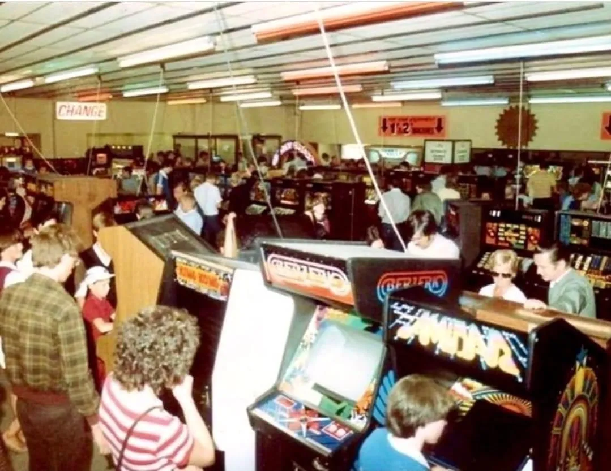
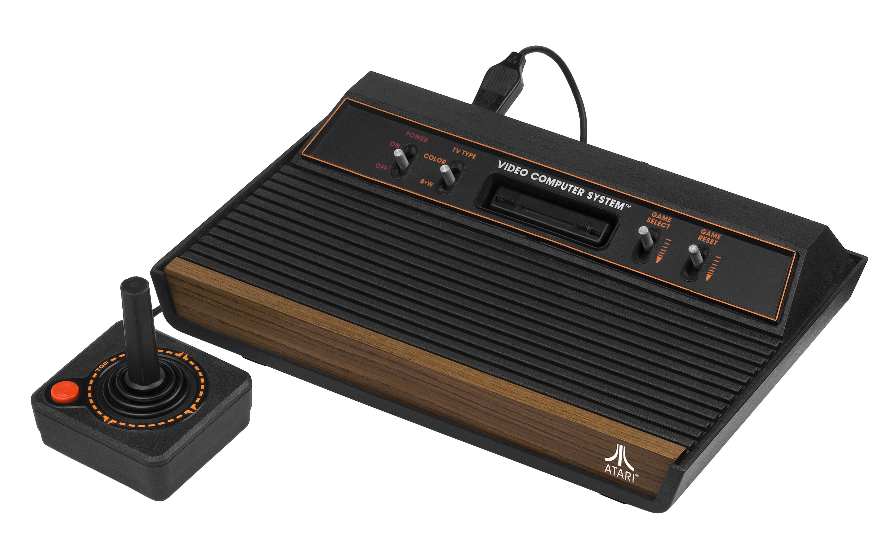

Alles begon met een pixel
Videogames zijn tegenwoordig een belangrijk onderdeel van de entertainmentindustrie, maar hun geschiedenis begon met eenvoudige technische experimenten. In de jaren vijftig en zestig experimenteerden onderzoekers en programmeurs met computerspellen. Deze computers waren groot, duur en moeilijk te gebruiken. Games waren daarom nog niet bedoeld voor een groot publiek. ze werden vooral ontwikkeld om de mogelijkheden van computers te onderzoeken en om te laten zien dat een computer ook interactieve ervaringen kon bieden.
Een belangrijk voorbeeld is Spacewar! dat in 1962 werd ontwikkeld op het Massachusetts Institutie voor Technology (MIT). In dit spel bestuurden twee spelers ruimteschepen die elkaar probeerden uit te schakelen. Hoewel het spel niet commercieel werd uitgebracht zoals moderne games, inspireerde het andere programmeurs en ontwikkelaars. het liet zien dat computers niet alleen voor berekeningen konden worden gebruikt, maar ook voor entertainment.
Een grote doorbraak volgde in 1972 met de introductie van Pong door Atari. Het spel was gebaseerd op tafeltennis en gebruikte twee eenvoudige balkjes en een vierkant balletje. De regels waren makkelijk te begrijpen, waardoor mensen snel konden beginnen met spelen. Het succes van Pong liet zien dat videogames commercieel aantrekkelijk konden zijn. Arcadegames verschenen vervolgens steeds vaker in speelhallen, cafés en andere openbare ruimtes. Spelers betaalden per spel en probeerden hun eigen scores te verbeteren of beter te presteren dan hun vrienden.


Reis terug naar het eerste console
De eerste consoles veranderden videogames van een activiteit buitenhuis naar entertainment voor thuis. Systemen zoals de Magnavox Odyssey en later de Atari 2600 maakten het mogelijk om een spelcomputer op een televisie aan te sluiten. Daardoor konden spelers in hun eigen woonkamer gamen en samen met familie of vrienden spelen. Hoewel de beelden eenvoudig waren, was het idee revolutionair. Een televisie kon voortaan ook gebruikt worden om interactieve spellen te spelen. een belangrijke ontwikkeling was de overstap naar consoles met verwisselbare spelcartridges. Met de Atari 2600 konden spelers verschillende games kopen zonder een compleet nieuwe console aan te schaffen. dat maakte het systeem aantrekkelijker en stimuleerde de verkoop van nieuwe spellen. Ook ontwikkelaars kregen hierdoor meer mogelijkheden om hun eigen ideeën op de markt te brengen.
Het cartridgesysteem had echter ook een nadeel, omdat steeds meer bedrijven games uitbrachten werden het voor consumenten moeilijker om de kwaliteit van spellen in te schatten. Sommige games waren vernieuwend en zorgvuldig ontworpen, terwijl andere snel werden gemaakt om te profiteren van de groeiende markt. De grote hoeveelheid beschikbare spellen zou uiteindelijk bijdragen aan de problemen die de Noord-Amerikaanse game-industrie begin jaren tachtig ondervond.